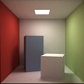
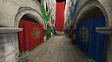
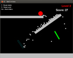
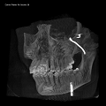
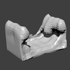
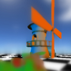
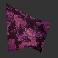
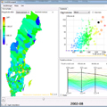

Portfolio
Monte Carlo Raytracer |
 |
| 2013 | C++ | Rendering equation C++ Light transport | |
| A stochastic ray tracer using a Monte Carlo integral estimator to approximate the solution to the rendering equation, supporting refracted and reflected rays. The rendering equation is split in direct and indirect illumination parts and uses shadow rays by sampling light sources. Implemented in C++. Read more... |
|  |
Soft shadows by Imperfect Shadow maps & SSAO |
|---|---|
| 2013 | C++ GLSL GLM GLUT | Realtime, Math/algebra | |
| A project implementing soft shadows for dynamic scenes in real time, using a combination of imperfect shadow maps and screen space ambient occlusion. Main parts implemented by me are the entire SSAO algorithm, as well as the pull-push interpolation algorithm used in the Imperfect Shadow maps method presented. Read more... |
Physically Based Simulation of Fire |
|
| 2013 | C++ | Offline simulation, Navier-Stokes, Implicit surfaces | |
| A physically based simulation of fire, using two seperate incompressible flow equations to simulate the unignited fuel and the hot gaseous products. These equations are coupled together using a ghost fluid method. I implemented the vorticity confinement method used to introduce high frequency details in the simulation, as well as gradient operators and parts of the pressure solving method and boundary conditions. Read more... |
|  |
Ball-to-Box, a Python game |
|---|---|
| 2013 | Python2.7 Box2D pyGame | |
| This is a small game project I did in my spare time with the aim of learning the programming language Python. It uses pygame for the viewport and for drawing primitives and fonts. Box2D, a 2d physics engine, is used for the game physics, collision detection between objects, and interaction with the mouse cursor. Read more... |
Scientific Visualization |
 |
| 2013 | C++ | Raycasting Volume rendering Isosurfaces | |
| Labs included in the course Scientific Visualization held in 2013. Subjects covered include iso surfaces, volume raycasting methods, scalar- and vector data fields. The labs were completed in collaboration with two fellow students. Read more... |
|  |
Modeling and Animation |
|---|---|
| 2013 | C++ | Mesh structures, Subdivision, Implicit surfaces | |
| These are labs completed for the course Modeling and Animation held in the spring of 2013. The labs incluce mesh data structures, mesh decimation, Loop subdivision, implicit surface representations, Level sets, and fluid simulation using the Navier-Stokes stable fluids method. All labs were completed in collaboration with a fellow student. Read more... |
Simulated Depth of Field on the GPU using the Heat Equation |
 |
| 2012 | C++ GLSL | Post-processing | |
| We created an interactive depth of field using simulated heat diffusion for real time computer graphics applications. Using an original RGB rendering along with the depth buffer, we calculate a focus map from user defined camera parameters (aperture, focal depth and focus plane distance). This focus map is then treated as a heat insulator ... Read more... |
|  |
Interactive Cloth Simulation |
|---|---|
| 2012 | C++ GLUT | Realtime simulation | |
| Together with four friends I implemented a real time cloth simulation using OpenGL and C++. The simulation uses a spring-mass-system consisting of a grid of points connected with a number of springs of different types. The dots positions are approximated using a second order Euler approximation with a fixed time step. The simulation is interactive. I implemented the methods for user interaction, e.g. grabbing, cutting, and tearing of the cloth. Read more... |
Visualization of Crimes and Socio-Economic Conditions |
 |
| 2012 | C# .NET DirectX | Data mining | |
| I look close at and visualize any correlation between socio-economic conditions and the amount of reported crimes in Sweden during a period of 10 years. The data was on a per-month and per-municipality basis, and was gathered from a number of government databases... Read more... |